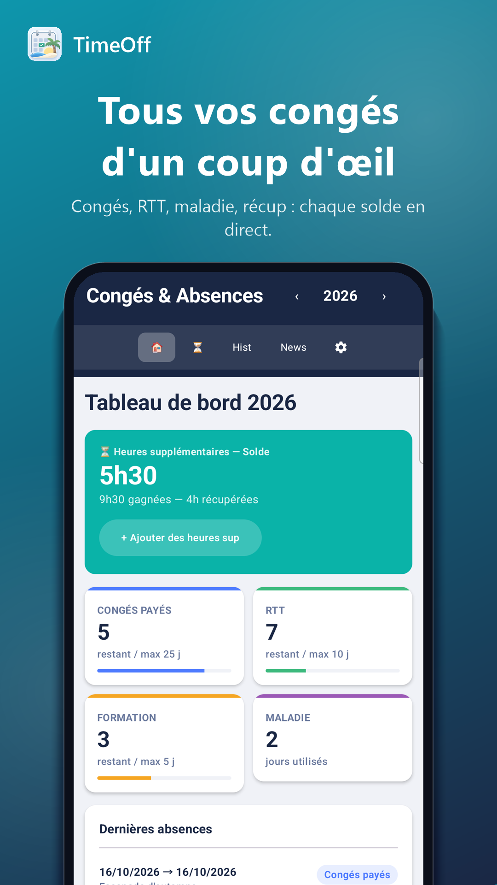
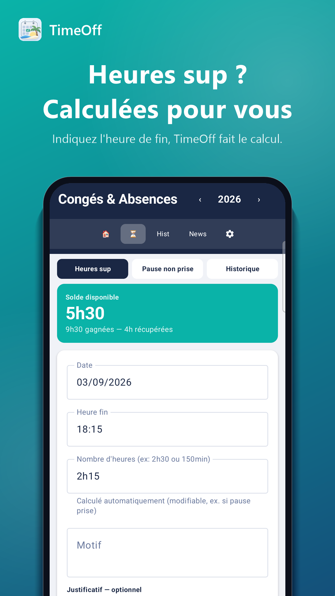
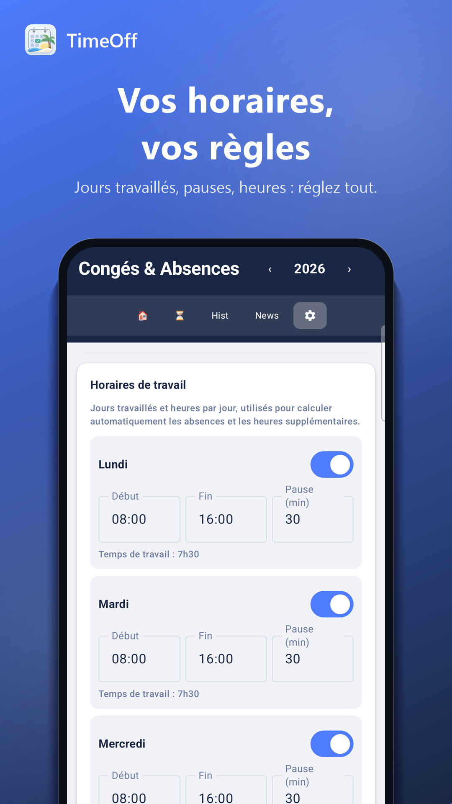
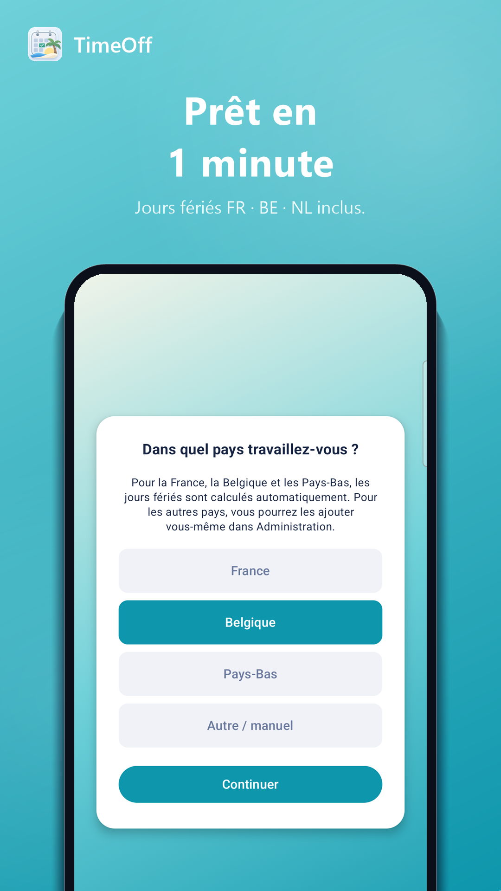
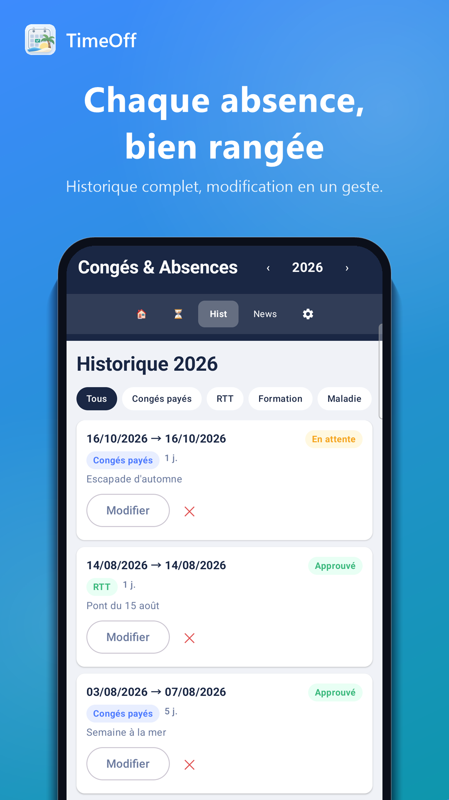
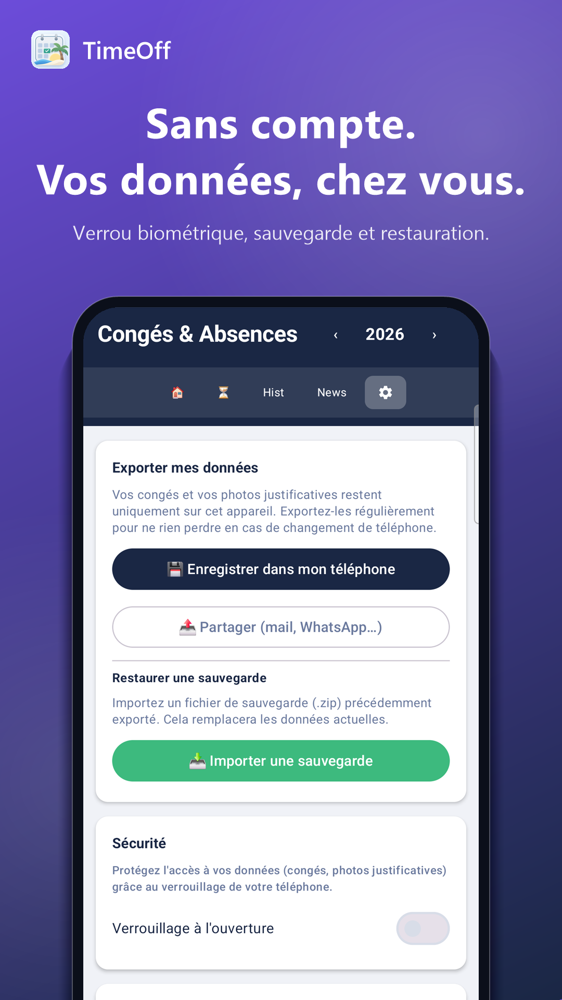

Salut, c'est TimeOff 👋
Un carnet de congés simple comme bonjour : vous notez vos horaires une fois, et hop, vos soldes, vos jours fériés et vos heures sup se calculent tout seuls. Pas de compte à créer, pas de pub, pas de blabla.
🎉 Vous testez la toute première version !
Merci beaucoup, ça m'aide énormément. Voici comment ça marche :
- Ouvrez le lien d'inscription au test que je vous ai envoyé, et rejoignez le programme.
- Installez TimeOff depuis le Play Store, comme une appli normale.
- Utilisez-la pour de vrai pendant les 14 prochains jours, si possible.
- Un souci, un avis, une idée ? Écrivez-moi à salva.bldn@gmail.com.
Tous vos compteurs, d'un coup d'œil
Congés, RTT, maladie, récup'… autant que vous voulez, en couleur.
Heures sup calculées toutes seules
Vous dites juste à quelle heure vous avez fini, TimeOff fait le calcul.
Jours fériés, on s'en occupe
France, Belgique, Pays-Bas : calculés tout seuls, jamais décomptés.
Chaque absence bien rangée
Historique clair, photo justificative si besoin, tout modifiable.
Nouveau téléphone ? Zéro stress
Un fichier, toutes vos données. On exporte, on réimporte, c'est réglé.
🔒 Vos données, chez vous, un point c'est tout
Aucun compte, aucune pub, aucun traqueur. Tout reste sur votre téléphone, ça marche même sans Internet.
La politique de confidentialité, en clair
Le mot de Salvo
Salut, moi c'est Salvo ☀️ J'ai créé cette petite application pour suivre mes propres congés sans me prendre la tête, et je me suis dit : pourquoi ne pas en faire profiter les autres ? Bonnes vacances !
TimeOff est un outil perso : il ne remplace ni les règles de votre employeur, ni votre convention collective.Hallo, hier is TimeOff 👋
Een verlofboekje zo simpel als goedendag: geef één keer uw werkuren op, en klaar — uw saldo's, feestdagen en overuren berekenen zichzelf. Geen account, geen reclame, geen poeha.
🎉 U test de allereerste versie!
Heel erg bedankt, dit helpt me enorm. Zo werkt het:
- Open de testlink die ik u heb gestuurd en sluit u aan bij het testprogramma.
- Installeer TimeOff via de Play Store, zoals een gewone app.
- Gebruik ze de komende 14 dagen echt, als het kan.
- Een probleem, mening of idee? Mail me op salva.bldn@gmail.com.
Al uw saldo's in één oogopslag
Betaald verlof, ADV, opleiding, ziekte, overuren-opname… maak er zoveel als u wilt, in uw eigen kleuren. Elk saldo krijgt een duidelijke voortgangsbalk.
Overuren? Die rekent TimeOff zelf uit
Geef gewoon aan wanneer u klaar was: TimeOff vergelijkt met uw uurrooster en doet de rest, pauze inbegrepen.
Uw uren, zoals u het wilt
Per dag: begin, einde, pauze. Verandert uw rooster? Eén tik en alles is herberekend — voorgaande jaren blijven met rust.
Feestdagen? Daar zorgen wij voor
Frankrijk, België, Nederland: zelfs Pasen en Hemelvaart worden automatisch berekend, en nooit van uw verlof afgetrokken.
Elke afwezigheid netjes bewaard
Datums, status, reden, duur… alles in een geschiedenis die u kunt filteren, wijzigen of ongedaan maken.
Uw bewijsstukken, veilig weggestopt
Een foto of bestand per afwezigheid, bewaard in een privéhoekje van de app — nooit in uw galerij.
Nieuwe telefoon? Geen paniek
Eén bestand, al uw gegevens. Exporteren, elders importeren, en alles staat er weer zoals voorheen.
Het jaareinde, zonder stress
U archiveert en kiest zelf wat u meeneemt naar volgend jaar: resterende dagen, overuren in voorraad.
🔒 Uw gegevens blijven van u, punt uit
Geen account, geen registratie, geen trackers die u volgen. Alles blijft op uw telefoon, de app werkt zelfs zonder internet. Alleen het nieuwspaginaatje van het team (uit te schakelen) gaat online, zonder ooit iets van uw gegevens te versturen. En als u wilt, vergrendelt een code, vingerafdruk of gezicht het geheel.
Het privacybeleid, in gewone taal
Een woordje van Salvo
Hoi, ik ben Salvo ☀️ Ik maakte dit kleine app'je om mijn eigen verlof zonder stress bij te houden, en dacht: waarom zou ik er anderen niet ook van laten profiteren? Fijne vakantie!
TimeOff is een persoonlijk hulpmiddel: het vervangt niet de regels van uw werkgever of uw cao.Hey, it's TimeOff 👋
A leave tracker as easy as saying hi: enter your working hours once, and that's it — your balances, holidays and overtime work themselves out. No account, no ads, no fuss.
🎉 You're testing the very first version!
Thank you so much, it helps me a lot. Here's how it works:
- Open the test sign-up link I sent you, and join the test program.
- Install TimeOff from the Play Store, like any normal app.
- Use it for real over the next 14 days, if you can.
- Found a bug, an opinion, an idea? Email me at salva.bldn@gmail.com.
Every balance, at a glance
Paid leave, comp days, training, sick days, overtime recovery… make as many as you like, in your own colours. Each balance gets a nice clear progress bar.
Overtime? TimeOff works it out for you
Just say when you finished: TimeOff compares it with your schedule and does the maths, break included.
Your hours, your way
Day by day: start, end, break. Schedule changes? One tap and it's all recalculated — past years never touched.
Public holidays? We've got it
France, Belgium, the Netherlands: even Easter and Ascension are worked out automatically, and never taken from your leave.
Every absence, neatly kept
Dates, status, reason, duration… all in a history you can filter, edit or undo in one tap.
Your proof, tucked away safely
A photo or file per absence, kept in a private corner of the app — never in your gallery.
New phone? No stress
One file, all your data. Export it, import it elsewhere, and everything's back just as it was.
Year-end, the gentle way
Archive the year and pick what carries over: remaining days, overtime in the bank.
🔒 Your data stays yours, full stop
No account, no sign-up, no trackers following you around. Everything stays on your phone, the app even works without internet. Only the little team news page (can be switched off) goes online, and it never sends any of your data. And if you like, a PIN, fingerprint or face can lock it all up.
The privacy policy, in plain words
A word from Salvo
Hi, I'm Salvo ☀️ I made this little app to track my own leave without the hassle, and figured — why not share it with everyone else too? Enjoy your time off!
TimeOff is a personal tool: it doesn't replace your employer's rules or your collective agreement.